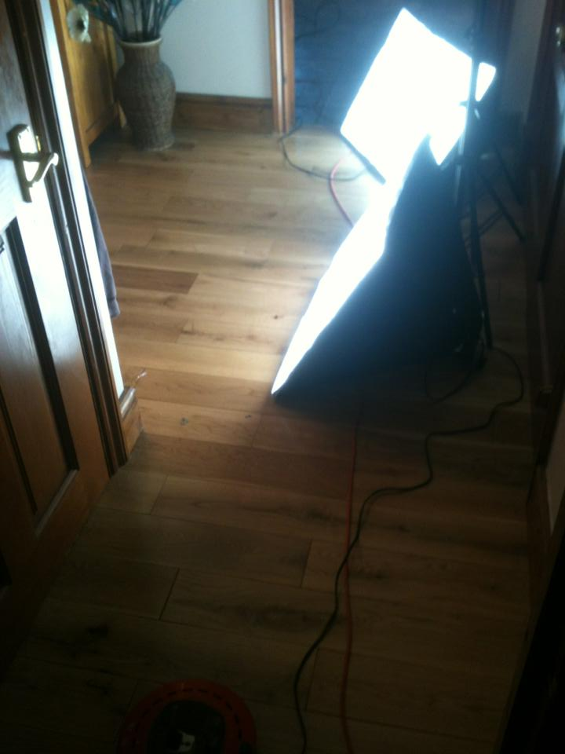

“AN EYE FOR AN EYE WILL ONLY MAKE THE WHOLE WORLD BLIND.”
- MAHATMA GANDHI
Want to find out more about the making of Obscurity?
Your in the right place!
View the production diary here.
Production Diary
Welcome to the Obscurity production diary, this follows the film from production to post production.
Day 1 - Filming
The first day of filming took place on 9th November 2013
Day 6 - Editing
21st November 2013 - some more editing underway, also some meetings to arrange shooting locations.
Day 7 - Filming
22nd November 2013 - filming on location.
Day 12 - Editing
4th December 2013 - some more editing completed.
Day 14 - Filming
December 6th 2013 - Filming on location yet again, some pickup shots done and courtyard scene & PE scene finished.
Day 17 - Trailer Released
December 15th 2013 - Trailer for Obscurity is released.
Day 19 - Editing
17th December 2013 - scenes starting to join together without markers.
Day 23 - Editing
30th December 2013 - audio improvements and lots more parts of scenes edited.
Day 25 - Editing
January 5th 2014 - One scene has been exported to show the staff at our premiere location.
Day 28 - Editing
12th January 2014 - audio improvements and lots more parts of scenes edited.
Day 30 - Filming & Editing
19th January 2014 - Last pickup shots done and directors copy exported.
Day 31 - Director's Copy
24th January 2014 - some last touches added, and also director's copy has been given to our showing location
Day 32 - Editing
26th January 2014 - some more final adjustments made and some dates organised.
Day 38 - Showing
7th February 2014 - The showing date, with a great turnout and response!
Day 2 - Editing
10th November 2013 - some of the scenes that were filmed on day one were edited.
Day 5 - Editing
17th November 2013 - more editing completed, film starting to take shape.
Day 9 - Poster
29th November 2013 - the official Obscurity poster is released.
Day 10 - Filming
30th November 2013 - a lot more of the feature is filmed.
Day 11 - Editing
3rd December 2013 - loads more of the film is edited.

Day 16 - Filming
9th December 2013 - more filming, trailer in the making!
Day 20 - Filming
20th December 2013 - last day of "proper" filming.
Day 22 - Editing
29th December 2013 - Credits finished and all the footage is now imported, only about three scenes left to edit.
Day 27 - Publicity
Obscurity makes it into the Weston Mercury and IMDB.
Day 33 - Filming & Editing
30th January 2014 - Final pickup shots done, film is very nearly finished, just part of scene 15 left to edit and some corrections to be made as noted from the director's copy.
Day 34 - Meetings
31st January 2014 - two meetings in regards to Obscurity showings and showing informaiton changed from 50 guests to 150 guests.
Day 36 & 37 - Editing
6th February 2014 - last minute editing completed.
Day 39 - Website
8th February 2014 - website updates started for when the film releases publicly.
Day 41 - It's all over!
10th February 2014 - Obscurity releases onto YouTube and the new website launches.
Day 3 - Editing
Some more of the film is edited and watched through.
Day 4 - Filming
16tH November 2013 - more scenes filmed.
Day 8 - Editing
23rd November 2013 - editing again, film starting to pull together without scene markers.
Day 9 - Filming
29th November 2013 - filming on location again.
Day 13 - Editing
5th December 2013 - more scenes merged together.
Day 15 - Editing
December 8th 2013 - All scenes that have been filmed have now been edited in some way. Only about three scene left to film!
Day 17 - Filming
December 14th 2013 - more filming, almost everything shot now, even done some re-shoots.

Day 18 - Editing
16th December 2013 - some music added and end credits coming together, also reshoot scenes edited.
Day 21 - Editing
23rd December 2013 - blooper reel done.
Day 23 & 24 - Editing
Lots more of the film edited.
Day 26 - Editing and Presentation
January 6th 2014 - The film has started to be colour graded and we presented a scene to our showing location to give them an idea of the film.
Day 29 - Editing & Dates
18th January 2014 - Director's copy should be finished by tomorrow and then exported ready for the meeting with our showing location next week. Release dates announced.
Day 35 - Editing
2nd February 2014 - First export completed.
Day 40 - Website
9th February 2014 - new look website is completed.